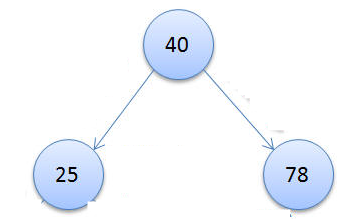
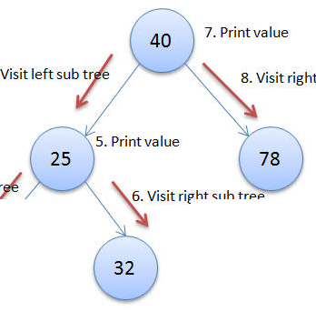
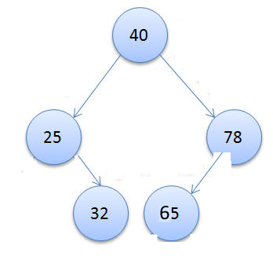
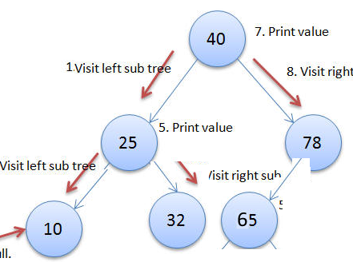
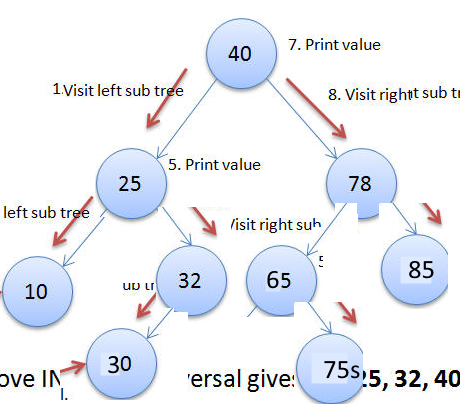

খুব শিগ্রই বাংলায় সহজ করে লেখা হবে
তখন ইমেইলে আপডেট পেতে রেজিস্ট্রেশন করো: এই খানে
Below content is a draft. Read at your own risk
এলাকার মাঠে ফুটবল খেলা হচ্ছে। সেই মাঠের পাশ দিয়ে কয়েকটা কুরবানীর গরু নিয়ে যাচ্ছে একজন। যে গরু নিয়ে যাচ্ছে তাকে দেখিয়ে রাশেদ বলতে শুরু করলো- শুধু গরু, ছাগল, হাতি, ঘোড়া দড়ি দিয়ে বেঁধে রাখে তা কিন্তু না। মাঝে মধ্যে মানুষকেও এই রকম দড়ি দিয়ে বেঁধে রাখে। স্পেশালি জেলখানার দাগী আসামিদের। তাদের কোমড়ে দড়ি দিয়ে বেঁধে রাখে। তারপর ফুটবল খেলার দিকে তাকিয়ে বললো- এই যে যারা ফুটবল খেলতে নামছে। তাদের সবারই জার্সিতে একটা করে নাম্বার লেখা আছে। এই জার্সি নাম্বারই সেই খেলোয়াড়ের নাম্বার। সে ছাড়া তার টিমের আর কোন খেলোয়াড়ের সেই জার্সি নাম্বার নাই। তারমানে জার্সি নাম্বারগুলা ইউনিক। এই রকম জার্সি নাম্বারের মতো, কিছু কিছু জেলখানার দাগী আসামিদের জামায়ও তাদের আসামি নম্বর লেখা থাকে। এখন একজন আসামি এর কথা চিন্তা কর যার কোমড়ে দড়ি দিয়ে লাগানো এবং গায়ের জামায় একটা জার্সি নাম্বার লেখা আছে। আরেকটা কথা মনে রাখবি-ফুটবল বা যেকোন খেলা শুরু করার সময়, যেকোন টিমের ক্যাপ্টেন সবার আগে মাঠে নামে। তারপর ক্যাপ্টেনের পিছনে পিছনে বাকি খেলোয়াড়রা মাঠে নামে। এখন কোন একটা উন্নত বিশ্বের জেলখানার কথা চিন্তা কর। যেখানে জেলখানার ভিতরে ফুটবল খেলার মাঠে আছে। সেই মাঠে ফুটবল খেলার একটা টিম মাঠে নামতেছে। তাই সবার আগে মাঠে নামলো টিমের ক্যাপ্টেন। ক্যাপ্টেনের জার্সিতে লেখা আছে ৪০। আর সেই জেলখানার নিয়ম হচ্ছে ক্যাপ্টেনের পরে যে নামবে তার জার্সি নাম্বার যদি ক্যাপ্টেনের জার্সি নাম্বারের চাইতে বেশি হয় তাহলে সে ক্যাপ্টেনের ডানপাশে থাকবে। আর যদি তার জার্সি নাম্বার ক্যাপ্টেনের জার্সি নাম্বারের কম হয় তাহলে সে ক্যাপ্টেনের বামপাশে থাকবে। এইটা যেহেতু একটা জেলখানার ভিতরে হচ্ছে। তাই জেলখানার আরেকটা নিয়ম হচ্ছে যে ডানপাশে থাকবে তার কোমরের দড়ি সামনে যে আছে সে ডান হাত দিয়ে ধরে রাখবে। আর বামে যে আছে তার কোমড়ের দড়ি বাম হাত দিয়ে ধরে রাখবে। শুধু যে ক্যাপ্টেন তার কোমড়ের দড়ি কেউ ধরবে না এবং সে সবার আগে নামবে। একটু আগে বলছিলাম ক্যাপ্টেনের জার্সি নাম্বার ৪০। এখন ক্যাপ্টেনের পরে যে আছে তার জার্সি নাম্বার ৭৮। তাই সে ক্যাপ্টেনের ডান পাশে যাবে। এবং ক্যাপ্টেন ডান হাত দিয়ে ৭৮ জার্সি ওয়ালা কয়েদি এর কোমড়ের দড়ি ধরবে। তারপর আসলো ২৫ নম্বর জার্সিওয়ালা কয়েদি। তার জার্সি নাম্বার যেহেতু ক্যাপ্টেনের জার্সি নাম্বারের চাইতে কম তাই সে ক্যাপ্টেনের বামপাশে যাবে। এবং ক্যাপ্টেন বাম হাত দিয়ে ২৫ নম্বর জার্সিওয়ালা কয়েদি এর কোমড়ের দড়ি ধরলো। এখন যদি শুধু এই তিন জন। অর্থাৎ ক্যাপ্টেন (৪০ লেখা জার্সি), ৭৮ লেখা জার্সি আর ২৫ লেখা জার্সি যদি মাঠে নামে তাহলে তাদেরকে দেখতে নিচের মতো লাগবে। //todo: get illustration and cut it small to present here.  এই যে ক্যাপ্টেনের জার্সি নাম্বারের চাইতে বেশি হইলে ডানে আর কম হইলে বামে। এই কথাটা সহজে মনে রাখার জন্য- "বামে কম, ডানে বেশি" বলতে পারিস। এই "বামে কম, ডানে কম বেশি।" কথাটা মনে রাখার সহজ উপায় হচ্ছে- যারা ডানহাতি। তারা বেশির ভাগ কাজ ডানহাতে করে। বাম হাত দিয়ে কম কাজ করে। কারন ডান হাতে শক্তি বেশি। বাম হাতে কম। তাই কোন হাতে শক্তি বেশি সেটা চিন্তা করলে বলে দিতে পারবি- বামে কম, ডানে বেশি। বামে কম ডানে বেশি- নীতি বজায় রেখে আগের ফুটবল খেলার টিমে যদি ৩২ লেখা কয়েদি এসে যোগ দিতে চায় তাহলে কি হবে? খুবই সিম্পল। ৩২ নাম্বার ওয়ালা জার্সি এসে প্রথমেই আসবে ক্যাপ্টেনের সামনে। তারপর ক্যাপ্টেনের জার্সির ৪০ এর সাথে তার জার্সি নাম্বার তুলনা করে দেখবে ৩২ হচ্ছে ৪০ এর চাইতে ছোট। তাই ক্যাপ্টেন বলবে- তুই ছোট তুই ডানে যাইতে পারবি না, বামে যা। এখন ৩২ জার্সি ওয়ালা ক্যাপ্টেনের বামে গিয়ে দেখবে সেখানে অলরেডি ২৫ জার্সি ওয়ালা দাঁড়ায় আছে। তাই সে ২৫ এর সাথে তার জার্সির নাম্বার তুলনা করে দেখে বুঝবে, ৩২ হচ্ছে ২৫ এর চাইতে বেশি। তাই ৩২ জার্সি ওয়ালা ২৫ এর ডানপাশে যাবে। কারন আগেই বলা ছিল- "বামে কম, ডানে বেশি"। এখন ২৫ এর ডানপাশে যেহেতু কেউ নাই। অর্থাৎ জায়গা খালি আছে তাই ৩২ গিয়ে ২৫ জার্সি ওয়ালার পাশে দাঁড়ায় যাবে। আর যেহেতু এইটা জেলখানা এবং ক্যাপ্টেন ছাড়া বাকি সবার কোমাড়ের দড়ি ধরে রাখতে হবে। তাই ২৫ এর ডানপাশে ৩২ থাকায়, 25 ডান হাত দিয়ে 32 এর কোমড়ের দড়ি ধরে রাখবে। এখন তাদের টিম দেখতে নিচের মতো হবে।  ৩২ ঢুকানোর পর যদি ৬৫ কে ঢুকাতে চাস। তাহলে আগের মতো তাকেও ক্যাপ্টেনের কাছ থেকে শুরু করতে হবে। তাই সে ক্যাপ্টেনের কাছে গিয়ে দেখবে ক্যাপ্টেনের জার্সি ৪০। আর ৬৫ হচ্ছে ৪০ এর চাইতে বেশি। তারপর সে ক্যাপ্টেনকে জিজ্ঞেস করবে-ভাই, আমি তোমার ডানপাশে দাঁড়াতে পারি? ক্যাপ্টেন বলবে- না। কারণ সেখানে অলরেডি একজন দাঁড়িয়ে আছে। তুমি তার কাছে যাও। তারপর ৬৫ ক্যাপ্টেনের ডানপাশে গিয়ে গিয়ে ৭৮ কে দেখবে। এখন ৭৮ এ কাছে গিয়ে ৭৮ এর সাথে তুলনা করে দেখবে। ৬৫ হচ্ছে ৭৮ এর চাইতে ছোট। যেহেতু ছোট তাই সে বামপাশে যাবে। তাই ৭৮ কে জিজ্ঞেস করবে-ভাই, আমি কি তোমার বামপাশে দাঁড়াতে পারি? যেহেতু ৭৮ বামহাত খালি। অর্থাৎ সেখানে কেউ নাই। তাই ৭৮ মুলা মার্কা হাসি দিয়ে বলবে- সমস্যা নাই, জায়গা খালি আছে তুমি দাঁড়ায় যাও। আমি তোমার কোমড়ের দড়ি বামহাত দিয়ে ধরে রাখতেছি।  ৩২ ও ৬৫ টিমে যোগ দেয়ার পর আসবে ১০। সবার একই সিস্টেম, শুরু করবে ক্যাপ্টেনের কাছ থেকে। তারপর বামে কম, ডানে বেশি ফর্মুলা এপ্লাই করে জিজ্ঞেস করতে থাকবে। ১০ যেহেতু ৪০ চাইতে ছোট সে যাবে বামে। বামে গিয়ে দেখবে ২৫। ১০ আবারও ২৫ এর চাইতে ছোট তাই সে যাবে ২৫ এর বামে। আর ২৫ বামে জায়গা খালি। তাই ১০ গিয়ে ২৫ বামপাশে দাঁড়ায় যাবে। আর ২৫ বামহাত দিয়ে ১০ এর কোমড়ের দড়ি রাখবে।  সিস্টেম কিন্তু এইটাই। এখন যদি ৮৫ লেখা জার্সি ঢুকতে গেলে। সেও ক্যাপ্টেনের কাছ থেকে তুলনা করে ডানে গিয়ে ৭৮ এর সাথে তুলনা করে ৭৮ এর ডানপাশে দাঁড়িয়ে যাবে। তারপর ৭৫ যোগ দিতে চাইলে সে- প্রথমে ক্যাপ্টেনের কাছে গিয়ে, তারপর ৭৮ এর বামপাশে যাবে। তারপর ৬৫ এর চাইতে বড় হওয়ায় ৬৫ এর ডানপাশে গিয়ে দাঁড়িয়ে যাবে। এই একই সিস্টেমে ৩০ জার্সিওয়ালা কয়েদিও টিমে ঢুকে যেতে পারবে। সে ক্যাপ্টেনের বামে গিয়ে, ২৫ এর ডানে গিয়ে, ৩২ এর বামপাশে দাঁড়িয়ে যাবে।  উপরের টিম একটা ট্রি ডাটা স্ট্রাকচার। যার রুটে বা মুলে আছে ক্যাপ্টেন। এবং খেয়াল করলে বুঝতে পারবি কোন নোডেরই দুইটার বেশি সন্তান নাই। তাইলে এই ট্রিটাকে পরিবার পরিকল্পনা গাছ বা বাইনারি ট্রি বলতে পারস। কারণ কোন নোডেরই দুইটার বেশি চাইল্ড নাই। আবার এই ট্রি এর আরেকটা স্পেশাল বৈশিষ্ট্য হচ্ছে এইটা "বামে কম, ডানে বেশি" ফর্মুলা অনুসরণ করছে। তাই এইটাকে একটা স্পেশাল বাইনারি ট্রি বলে। সেই স্পেশাল হওয়ায় এইটাকে প্রোগামিং এর ভাষায় বাইনারি সার্চ ট্রি (binary search tree) বলা হয়। কারণ এইটাতে কোন একটা জিনিস সার্চ করা বা খুঁজে বের করা অনেক সোজা। ধরে তুই ৭৫ জার্সি ওয়ালা কয়েদিকে খুঁজে বের করতে চাস। তুই ক্যাপ্টেনের কাছে গেছস এবং দেখলি ক্যাপ্টেনের জার্সিতে ৪০ লেখা আছে। আর তুইতো জানস এই ট্রিতে বামে কম ডানে বেশি ফর্মুলা এপ্লাই করা আছে। তাই ৪০ এর বামপাশের যত নোড আছে সবগুলার (শুধু চাইল্ড বা সন্তান না। বরং সন্তানের নিচে নাতি, নাতির নিচের খুনতি) সবই ৪০ এর চাইতে ছোট। বিশ্বাস না হলে, ট্রি টার দিকে ভালো করে তাকিয়ে দেখ। তুই যেহেতু রুট বা ক্যাপ্টনের মানের চাহিতে বড় মান খুজতেছস- তাই রুটের বামপাশে খোঁজার একদম দরকার নাই। ডাইরেক্ট এক লাফে ডানপাশে চলে যাবি। এইবার ক্যাপ্টেনের ডানপাশের দেখবি ৭৮। তুই যেহেতু ৭৫ খুজতেছস, সেটা ৭৮ এর চাইতে ছোট। তাই সেটা ৭৮ এর ডানপাশে থাকবে না। বরং বামপাশে থাকবে। তাই তুই নিশ্চিন্ত মনে ৭৮ এর বামপাশে হাঁটা শুরু করে দিলি। এখন ৭৮ এর বামপাশে আছে ৬৫। তুই জানস ৬৫ এর চাইতে ৭৫ বড়। তাই তুই ৬৫ এর ডানপাশে হাটা দিলি। আর এক কদম হাটা দিলেই ৭৫ এর দেখা পেয়ে যাবি। এইবার গুণে দেখ উপরের ট্রি তে সর্বমোট ৯ টা নোড আছে। তবে ৭৫ খুঁজে বের করার জন্য তোকে ৯ টা নোডের সবগুলাতে গিয়ে চেক করা লাগে নাই। বরং তুই চারটা নোড চেক করেই ৭৫ পেয়ে গেছস। চারটা নোড মানে তুই প্রথমে রুট বা ৪০ চেক করছস। তারপর ৭৮। এরপর ৬৫। তারপরেই ৭৫ কে পেয়ে গেছস। তারমানে বামে কম ডানে বেশি হইলে খুঁজে বের করা অনেক দ্রুত ও সহজ হয়। তাই এইটাকে বাইনারি সার্চ ট্রি বলে। আজকের পর কেউ যদি জিজ্ঞেস করে বাইনারি সার্চ ট্রি কি জিনিস। এইটা কি খায় পিন্দে না মাথায় দেয়। তাহলে চোখ বন্ধ করে বলে দিবি- যে পরিবার পরিকল্পনা ট্রি বামে কম ডানে বেশি ফর্মুলা মেনে চলে, সেটাই বাইনারি সার্চ ট্রি। প্রশ্ন: 30,85,65,24,12,23,56,78 সংখ্যাগুলো দিয়ে একটা বাইনারি সার্চ ট্রি বানিয়ে দেখাআর খেয়ে দেয়ে কোন কাজ কাম না থাকলে www.JhankarMahbub.com দেখে আয়